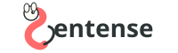
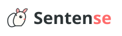
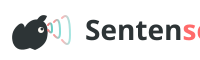
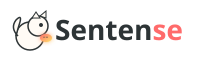
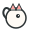
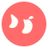
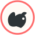
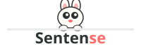
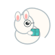
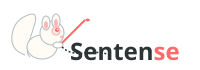

Leucistic Squirrel — 10 Interpretations
Typographic Integration

The squirrel forms the "S" in Quirrely. Tail curves at top, body at bottom. Works at all sizes.
Best for: Primary logo, all applications
Minimal Line Art

Squirrel with tilted head and perked ear, as if listening to your words. Coral accent on ears.
Best for: Wordmark + icon combination
Sound Wave Integration

Squirrel silhouette with voice/sound waves emanating. Represents "finding your voice."
Best for: App icon, social cards, modern feel
Geometric Modern

Geometric squirrel holding a glowing "sentence" like an acorn. The collected words glow.
Best for: Tech-forward applications
Ultra Minimal

Reduced to essentials: circle + ears + tail. Perfect for tiny sizes. Can animate.
Best for: Favicon, loading spinner, app icon
Abstract Negative Space

Squirrel silhouette forming quotation marks in negative space. Bold and memorable.
Best for: Favicon, watermark, brand mark
Cameo / Medallion

Elegant squirrel portrait in circular frame. Premium, distinguished feel.
Best for: Pro badges, certificates, premium features
Playful Mascot

Friendly squirrel peeking over a line of text. Big curious eyes, approachable feel.
Best for: Onboarding, empty states, error pages
Cozy Illustration

Squirrel curled up reading a tiny book, wearing little glasses. Warm and inviting.
Best for: Blog, loading states, about page
Detailed Illustration

Detailed squirrel with quill, writing. Ink trail forms the wordmark. Literary feel.
Best for: Blog headers, about page, editorial